Cómo se construyó el mundo antiguo, explicado en diez minutos
Ingeniería, batallas y ciudades que siguen en pie dos mil años después. Artículos largos, documentales y revistas, escritos para que entiendas cómo funcionaba todo.
Los tres artículos que más gente lee hasta el final
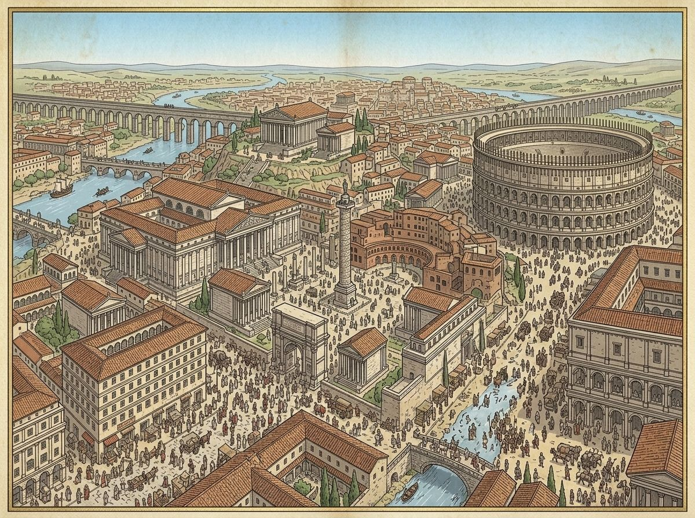
Tres legiones entraron al bosque. Ninguna volvió.
La emboscada de Arminio en el año 9 dC y por qué Roma nunca volvió a cruzar el Rin.
2.000 años en pie sin una gota de argamasa.
728 metros de granito encajado a presión. Cómo lo levantaron y por qué sigue ahí.
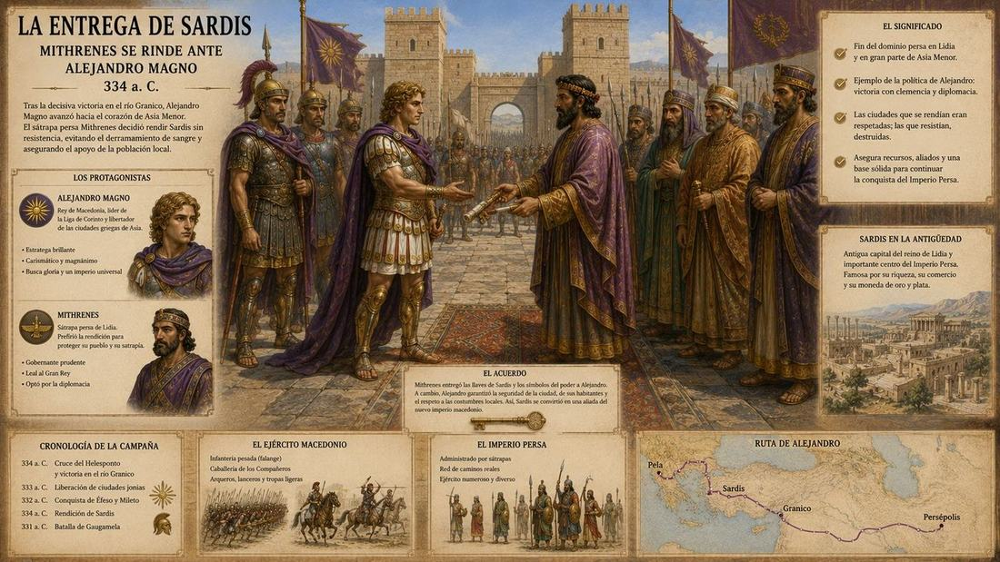
5.500 hombres, diez cohortes, una sola voluntad.
Armamento, paga, castigos y la organización de la máquina militar más eficaz de la Antigüedad.
Mil años de historia, en ocho momentos
Cada fecha abre el artículo completo. Recorre la línea de izquierda a derecha.
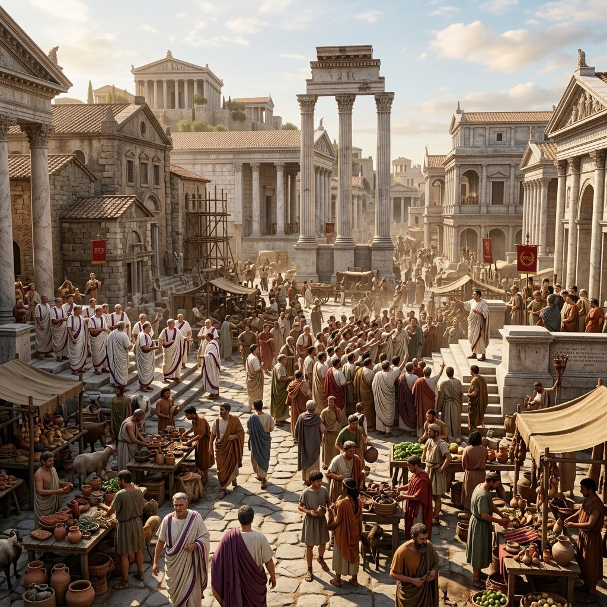
Fundación de Roma
Rómulo, el Tíber y el mito que se volvió imperio.
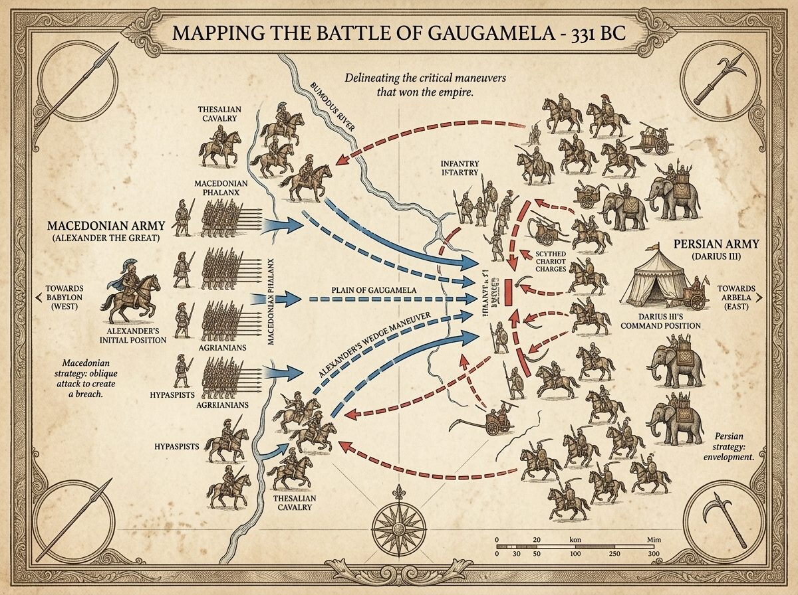
Gaugamela
Alejandro contra Darío III: el día que cayó Persia.
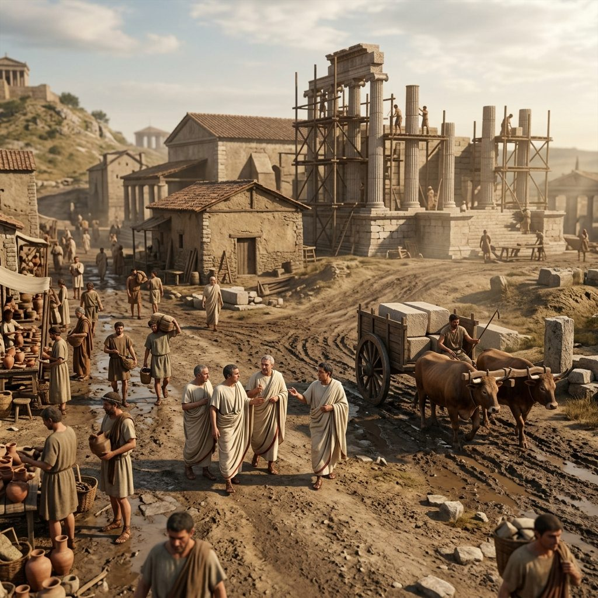
Guerras Púnicas
Roma y Cartago se disputan el Mediterráneo.

César cruza el Rubicón
La apuesta que acabó con la República.
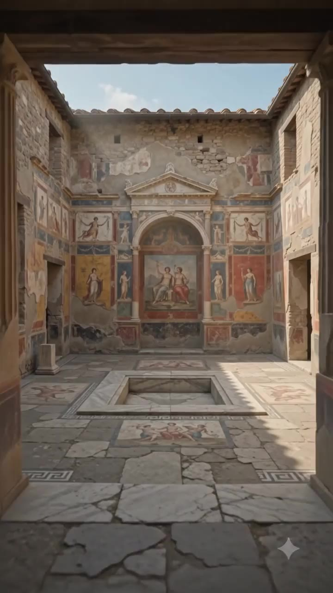
Augusto y la Pax Romana
Dos siglos de paz construidos por un solo hombre.
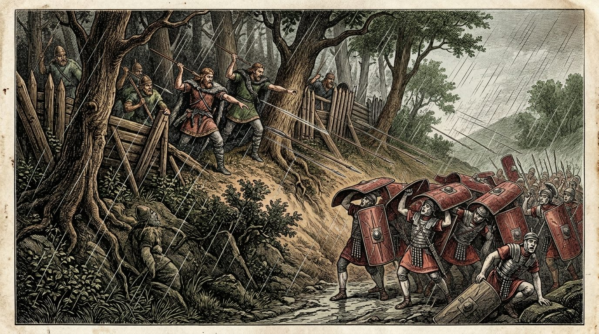
Teutoburgo
Tres legiones perdidas en un bosque germano.

Pompeya
El Vesubio congela una ciudad para siempre.
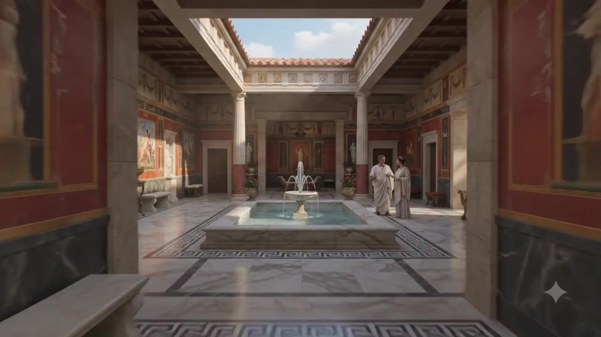
Crisis del siglo III
Cincuenta años, veintiséis emperadores.
Falanges, emperadores y una ciudad bajo la ceniza
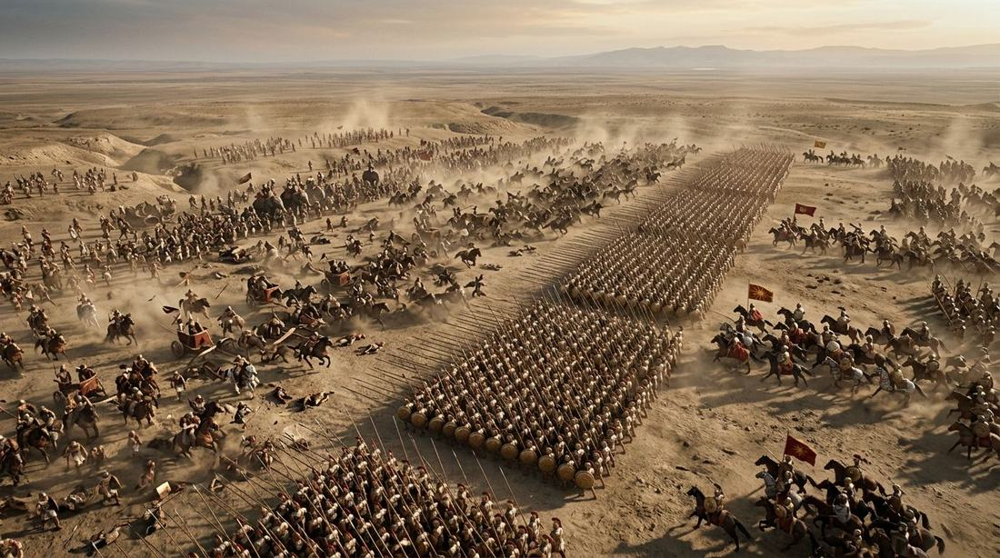
Grecia · TácticaFalange Macedonia: Armas y Táctica que Conquistaron el Mundo
Qué era la falange macedonia, cómo se organizaba y qué armas usaba: la formación con la que Filipo II y Alejandro dominaron el Mediterráneo.
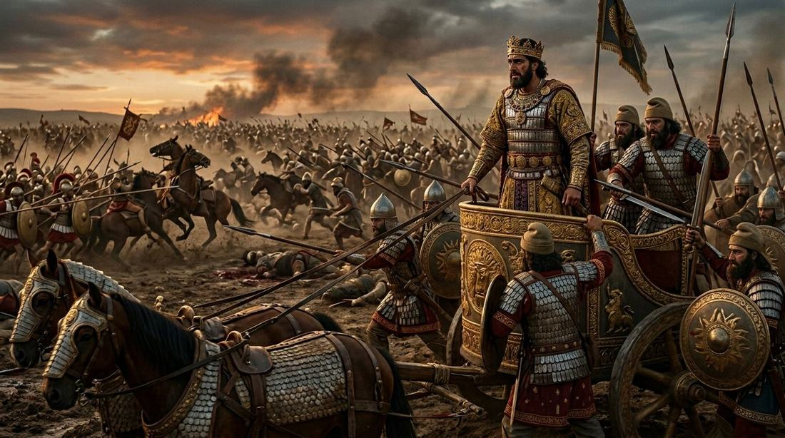
Persia · Darío IIIDarío III y la Caída del Imperio Persa
En el otoño del 331 a.C., en una llanura polvorienta cerca de Gaugamela, el destino del mundo conocido quedó sellado.
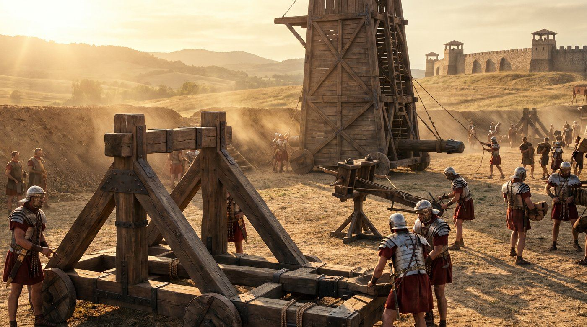
Roma · Ingeniería de guerraMaquinaria de Guerra Romana: La Ingeniería del Poder
Si las legiones conquistaban los campos abiertos, la maquinaria de guerra era la que doblegaba las ciudades amuralladas.
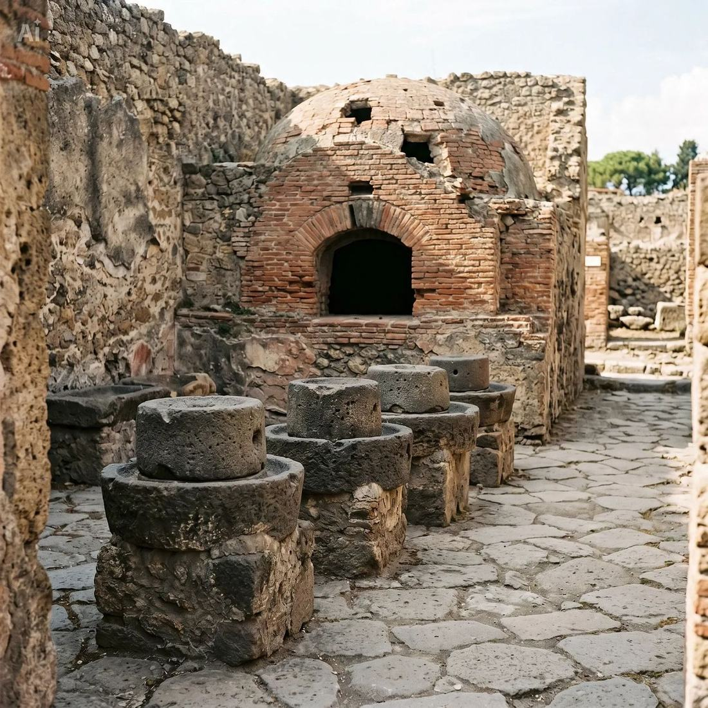
Pompeya · 79 d.C.Pompeya: El Último Día de una Ciudad Eterna
Hora a hora, la erupción del Vesubio: cómo murió Pompeya, el testimonio de Plinio el Joven y lo que la arqueología sigue revelando.
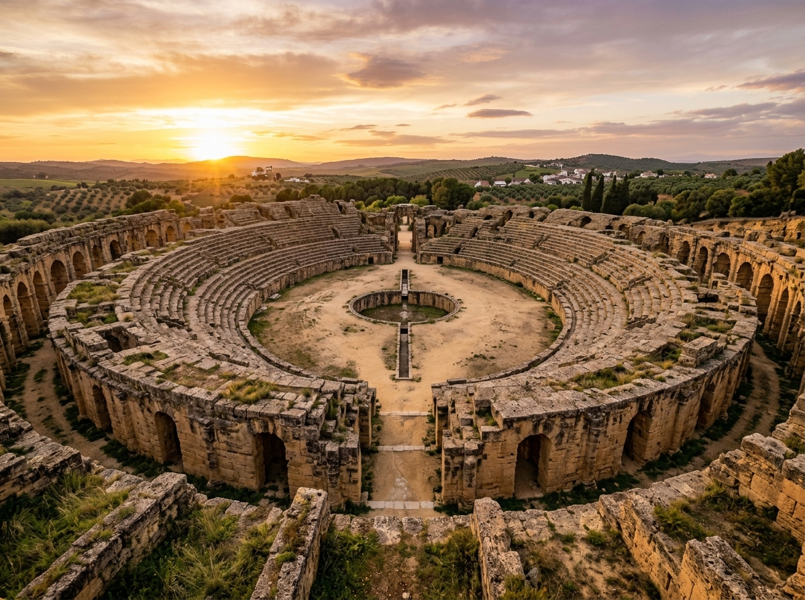
Hispania · Ciudad imperialItálica: La Primera Ciudad que Roma Fundó Fuera de Italia
En 206 a.C., Escipión instaló a sus veteranos en una colina de Hispania. Dos siglos después, esa colonia había dado a Roma dos emperadores.
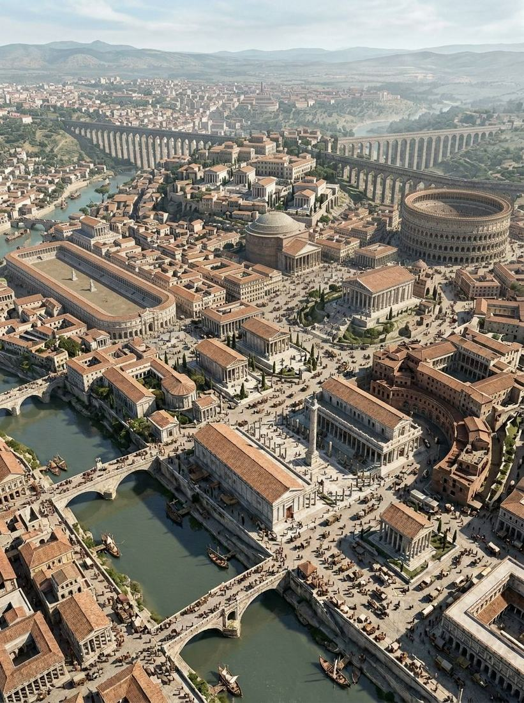
Pompeya · Vida cotidianaPompeya: Arte, Vida y Revelaciones Eternas
Si la primera historia de Pompeya es de muerte y destrucción, la segunda —quizás la más importante— es una historia de vida.
«No saber lo que ocurrió antes de nacer es ser siempre un niño.»Cicerón · Orator, 46 a.C.
Las 9 revistas de 2026 en un solo pack
146 páginas ilustradas: los diez emperadores, Persia, Hititas, Fronteras, Conexiones, Guardianes y los grandes hallazgos del año. En PDF, para leer en el móvil o la tablet.
Los relatos largos del canal, en video
 15:38
15:38El Desastre del Bosque de Teutoburgo
Tres legiones romanas desaparecieron en un bosque germano en el año 9 d.C. El desastre que detuvo la expansión de Roma.
 12:08
12:08La Batalla que Cambió la Historia
El 1 de octubre del 331 a.C., Alejandro Magno se enfrentó al mayor ejército jamás reunido por Persia.
 11:18
11:18El Fin del Imperio Romano de Oriente
El asedio de 1453: el último acto de mil años de historia romana en Oriente.
 11:57
11:57¿Cómo un Hombre en Quiebra Conquistó el Mundo?
Antes de cruzar el Rubicón, César estaba al borde de la ruina. La apuesta que cambió Roma para siempre.
Sigue la historia más de cerca
Círculo de Historiadores
Las revistas completas en flipbook, análisis que no publicamos en ningún otro lugar y debate con más de cien aficionados a la historia antigua.
Un dato del mundo antiguo cada día
Los reels y artículos nuevos directo en tu teléfono, sin algoritmo de por medio. Gratis.